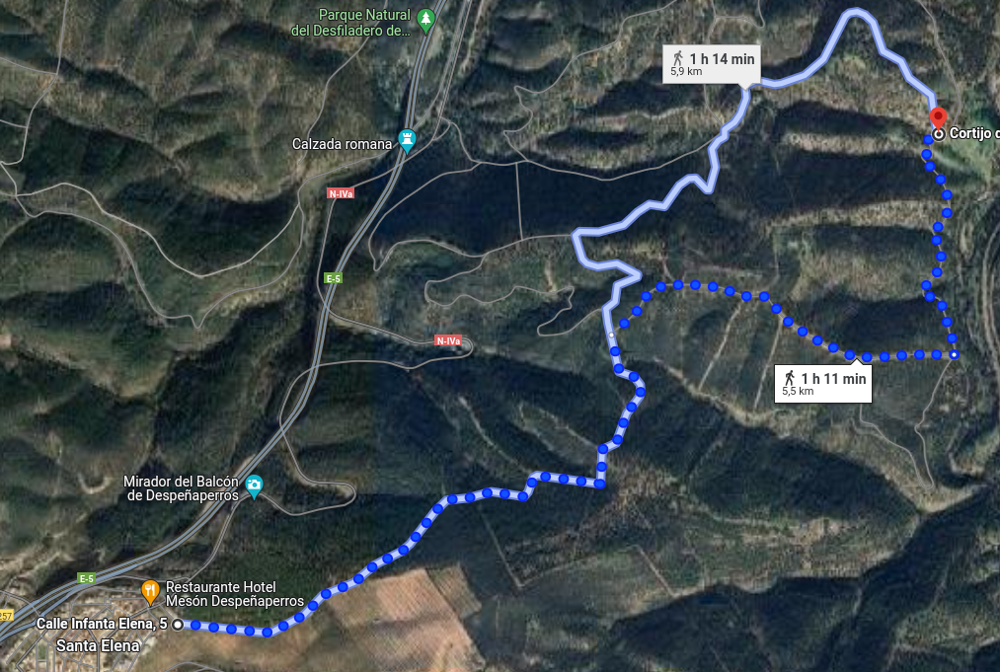
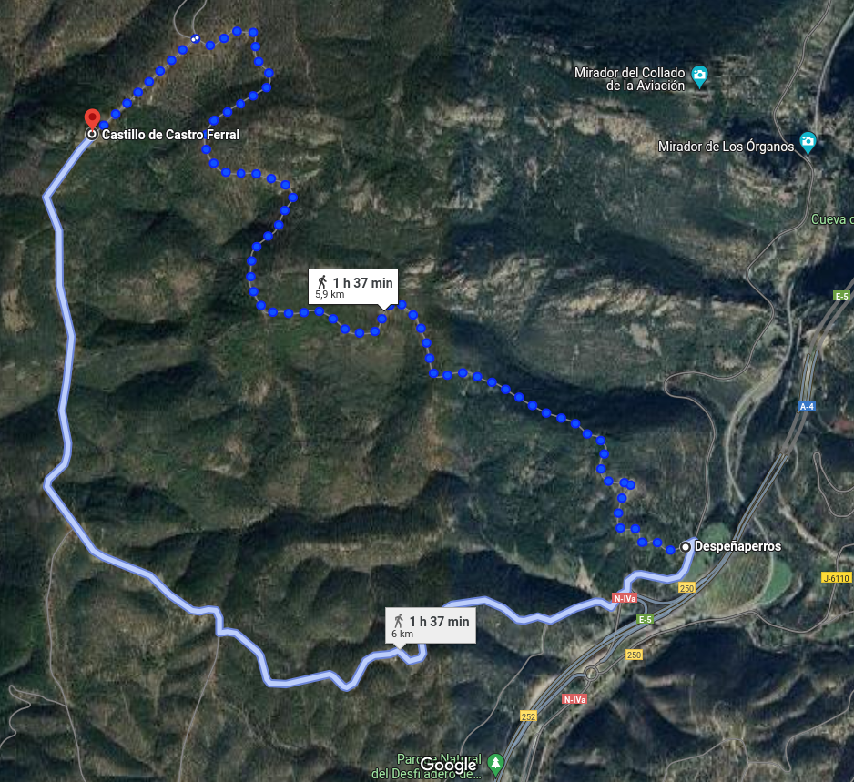
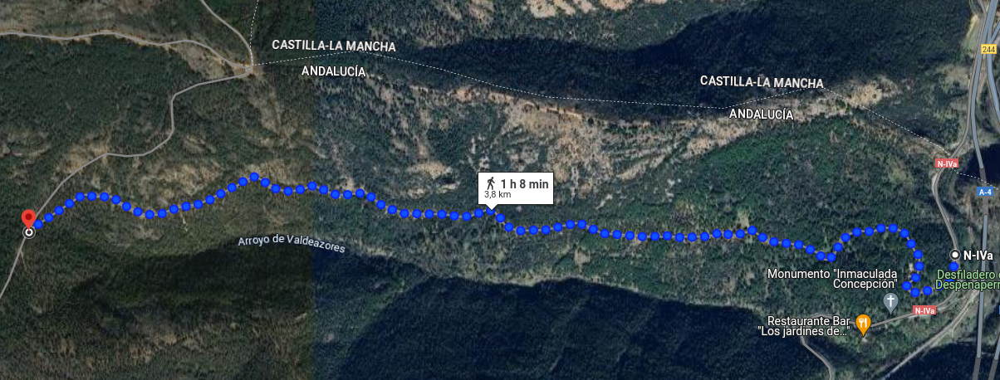
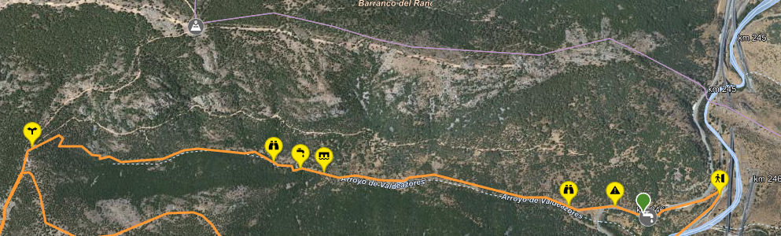
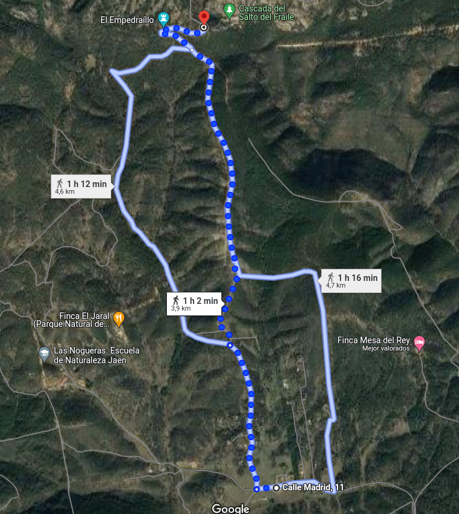

Tarde
Vuelta desde el camping.

Google
Miércoles
Castillo de Castro Ferral.

Google
Jueves
Arroyo Valdeazores.
Comida en "Los jardines de Despeñaperros"


Google
Viernes
Salto del Fraile.

Google
Jaén
Castillo Santa Catalina.
Google
Parquing recinto ferial.
Google
Parquing circunvalación.
Google